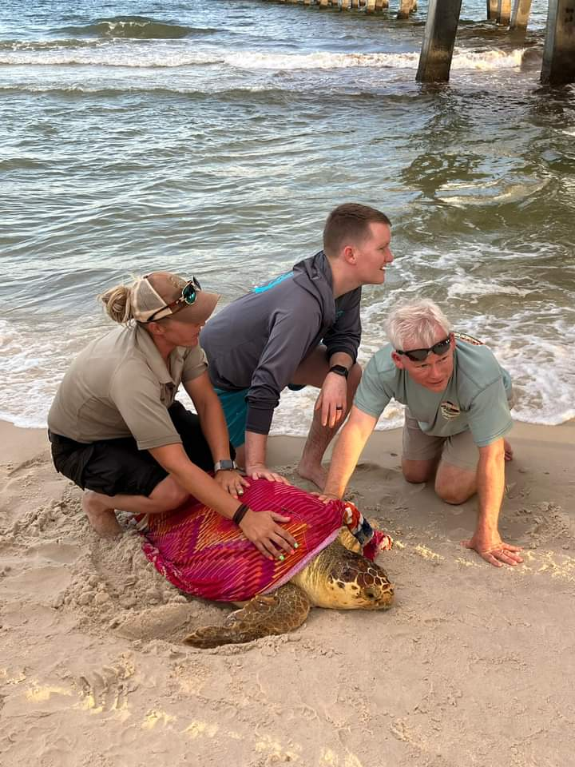
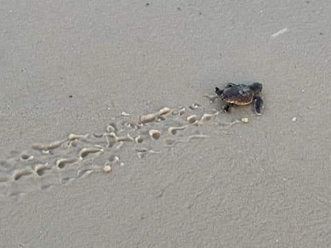

100 million years old. Survived the mass extinction that wiped out the dinosaurs. And they still need our help. Barrett and his wife are proud Share the Beach volunteers on the Alabama Gulf Coast.

I have been fascinated by sea turtles since I first learned just how ancient they really are. These creatures have been on Earth for more than 100 million years — they survived the mass extinction that wiped out the dinosaurs. They were navigating the world's oceans long before humans existed. And honestly? I also just think they're adorable. 🐢
My wife and I are proud volunteers for Share the Beach — Alabama's official sea turtle conservation program, founded in 2005 by the Friends of the Bon Secour Wildlife Refuge. Every season, from May through October, we join fellow volunteers on the sand to protect the turtles that come to our beaches to lay their eggs.
Share the Beach works to mitigate human-related impacts to nesting sea turtles, monitor nests and hatchlings, and promote conservation through public outreach and education. Volunteers give their time to search for nests, assist during hatchling events (known as "boils"), give talks for school groups, and educate the public on how to share the beach responsibly.
The program follows protocols set forth by the U.S. Fish and Wildlife Service under the federal endangered species recovery permit. It receives no federal funding — it runs entirely on donations from sponsors and the Adopt-a-Nest program.

Sea turtles are pretty darn awesome — and they need our help and respect. Please do your part to help our little ancient friends. 🐢
All footage and photography obtained with approval of U.S. Fish & Wildlife Service under conditions not harmful to sea turtles.